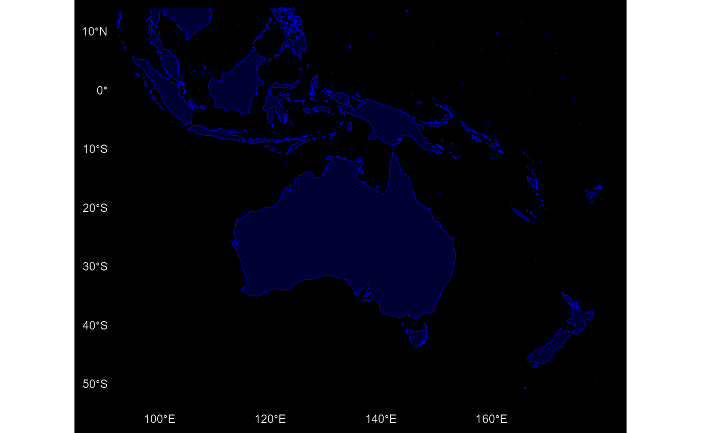

A sf object as provided by GISCO (2016 version).
Format
A POLYGON data frame (resolution: 1:20million, EPSG:4326) object with
3 variables:
FID
COAS_ID
geometry: geometry field
See also
Other dataset:
gisco_countries,
gisco_countrycode,
gisco_nuts,
tgs00026
Examples
coasts <- gisco_coastallines
library(ggplot2)
ggplot(coasts) +
geom_sf(color = "blue", fill = "blue", alpha = 0.2) +
# Zoom on Oceania
coord_sf(
xlim = c(96, 179),
ylim = c(-51, 11)
) +
theme_minimal() +
theme(
plot.background = element_rect(
fill = "black",
color = "black"
),
panel.grid = element_blank(),
axis.text = element_text(colour = "grey90")
)
